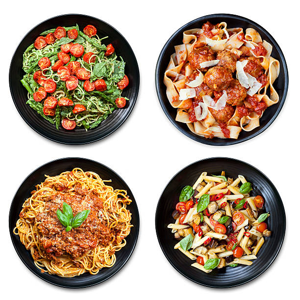

Beef Pasta



Ingredients
- Meat loaf 500g
- 1 Onion in cubes
- 2 tbsp GG Paste
- 1 tsp Cummin
- 1 tsp Coriander powder
- 1 tsp Chilli powder
- 0.5 tsp Chilli flake
- 1 tsp Salt
- Pasta Sauce
- 500 g Pasta
Directions
- Cut the onions in cubes, and fry them golden brown
- After the onions are ready add in GG paste and give it a good mix 2-3 min
- Add in the meat loaf and cook it until it turns brown
- After the meat loaf is cooked add all the spices
- Add in the pasta sauce in and give it a good mix
- Now that pasta sauce is ready let it simmer on lowest heat
- Take a new pot fill it halfvay up with water and boil the pasta 10-15 min
- Drain the pasta and give it a good rinse.
- Add the pasta in the pasta sauce and give it a good mix.
- Serve the pasta with some grated cheese.
- Bon Appetit